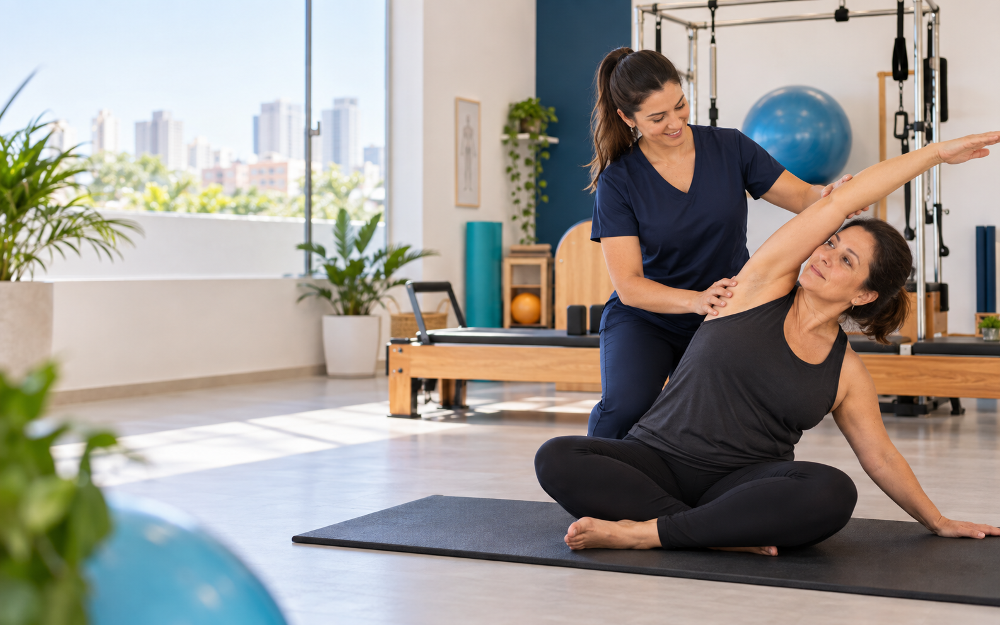

A orientação começa pelo momento e pelos objetivos de cada pessoa.

Imagem representativa da direção de arte.
Cuidado é percurso
Da primeira escuta à sua evolução.
-
01
Avaliação
Entender histórico, dores, rotina e objetivos.
-
02
Plano
Definir uma conduta possível para o seu momento.
-
03
Acompanhamento
Ajustar exercícios e estratégias conforme a resposta do corpo.
-
04
Evolução
Construir autonomia, confiança e qualidade de vida.
O que cuidamos
Serviços que conversam entre si.
A orientação ideal depende de avaliação individual.Pilates
Prática adaptada para desenvolver controle, mobilidade, força e consciência corporal.
Fisioterapia preventiva
Cuidado para reduzir recorrências, melhorar função e orientar hábitos de movimento.
Reabilitação
Acompanhamento para recuperar função e retornar à rotina com mais segurança.
Priscila
Castro
Castro
À frente da Rama
Técnica com escuta. Direção com presença.
Priscila Castro é o nome associado à condução da Rama Pilates e Fisioterapia. A experiência é apresentada de forma humana: cada plano nasce do encontro entre conhecimento profissional e a realidade de quem chega.
Conhecer a Rama no Instagram ↗Como a jornada se mantém coerente
Escuta, orientação e acompanhamento no mesmo percurso.
O percurso pode ser ajustado conforme a resposta do corpo.
Horários publicados no Google
Segunda a sexta
8h–20h
Sábado e domingo · fechado
Quem conhece a Rama
Avaliações no Google ↗“São profissionais competentes e com uma ética profissional excelente.” Zuleica Curado
“Super recomendo o trabalho das fisioterapeutas do Espaço Rama.” Patricia Fernandes
“Além de se exercitar, a gente se distrai com o astral do ambiente.” Norma de Jesus Sales
Antes da avaliação
Preciso saber qual serviço escolher?
Não. A avaliação ajuda a entender qual caminho faz sentido para seu momento.
Como confirmar os horários?
O Google Business informa atendimento de segunda a sexta, das 8h às 20h. Confirme a agenda diretamente pelo WhatsApp da Rama.
Onde fica a Rama?
Rua Antônio Corrêa Júnior, 201, salas 2 e 4, Vigilato Pereira, Uberlândia/MG.
salas 2 e 4 · Vigilato Pereira
Uberlândia — MG